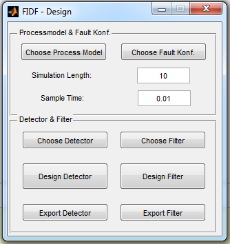

The Graphical User Interface to Test and Design new Filters and Detectors
Contents
How to use this Graphical User Interface 'FIDF_Design'
This GUI supports the user by designing and testing of filters and detectors on a given process model.
The first step is to choos a Process Model with the "Choose Process Model" Button. The model should be a Simulink model with exactly one output. It represent the sensor observations.
The second step is to specify the expected fault types and their parameters. This can be done by choosing a save fault configuration with the button "Choose Fault Konf.".
Now you can choose a filter or detector by pushing the corresponding button. When choosing a detector, you have to select the folder containing all necessary functions (see also design_detector, section 'Specifying a detector type'). If you choose a filter, you have to select the Simulink model of the filter (see also get_config section 'Add New Filter').
You can now design your detector or filter by pushing the corresponding button. This will start a time consuming process. During this process, the detector/filter will be tested for the given process model with the given fault configuration. At the end, the performance of the detector/filter is displayed. If the results are satisfying, one can export the detector/filter to a specified folder by using the button 'Export Detector' or 'Export Filter'.
Image of the graphical user interface

Related Functions
Function overview
Panel: Processmodel & Fault Konf.
Element: Choose Process Model Function: Get the file name and path of the processmodel with uigetfile() and call set_processModel() with the given informations to set the choosen process model and calls set_sampletime() to set up the given sampletime into this process model
Element: Choose Fault Konf. Function: Get the name and the path of the fault configuration file with uigetfile() and calls loadFaultKonf() and countFaults()
Element: Simulation Length Function: Get the consigned data from the field and write it as SimLength to the workspace
Element: Sample Time Function: Get the consigned data from the field and write it as SampleTime to the workspace
Panel: Detector & Filter
Element: Choose Detector Function: Get the path of the detector with uigetfile() and write it as FilePath_Detector to the workspace
Element: Design Detector Function: starts the design process for the choosen detector.(start_designing_detector())
Element: Export Detector Function: Uses uiputfile() to define the file destination of the recently generated detector.
Element: Choose Filter Function: Get the name and the path of the filter with uigetfile() and write them as FileName_Filter and FilePath_Filter to the workspace
Element: Design Filter Function: starts the design process for the choosen filter.(get_config())
Element: Export Filter Function: Uses uiputfile() to define the file destination of the recently generated filter.